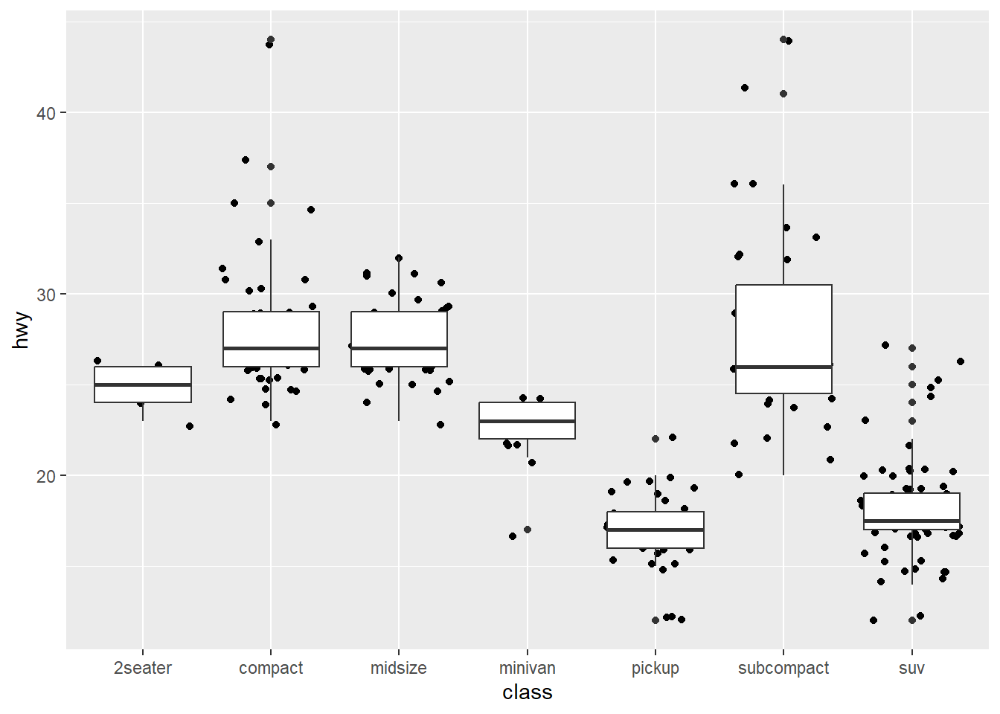
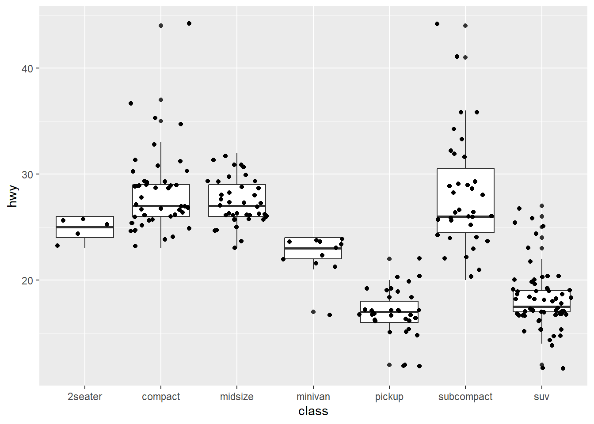
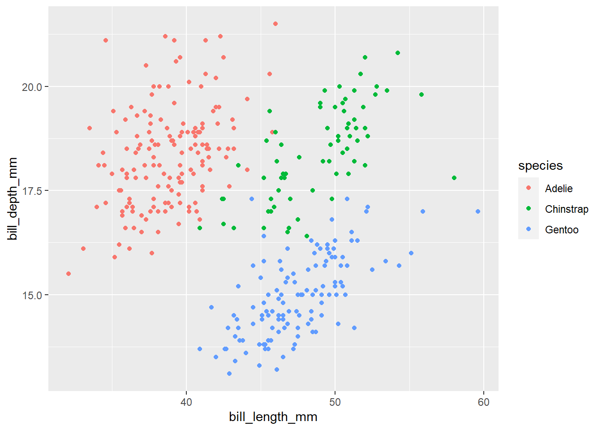
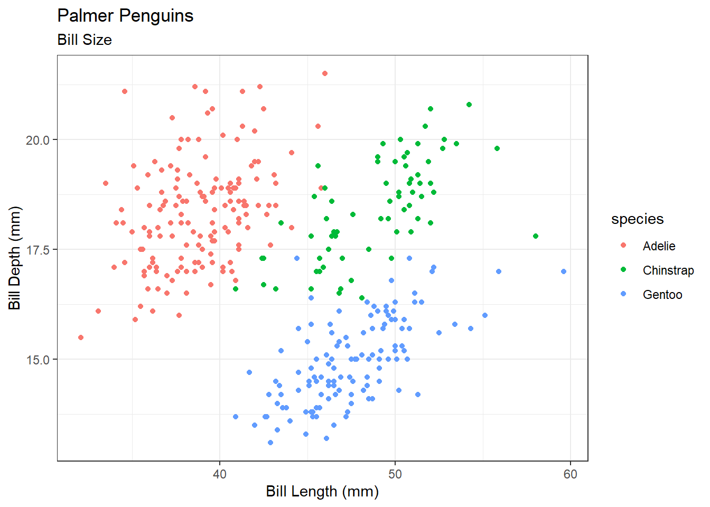
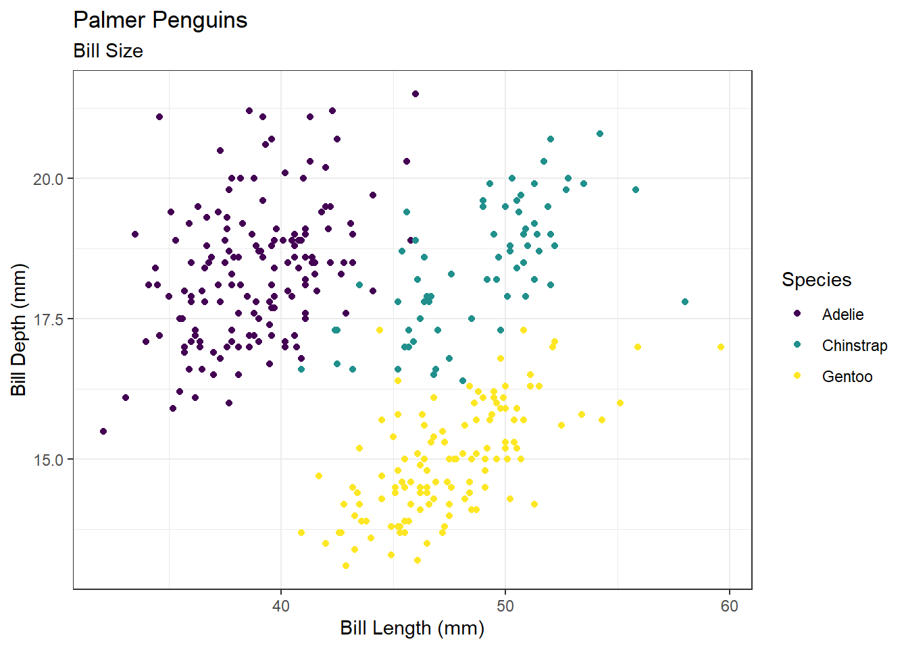
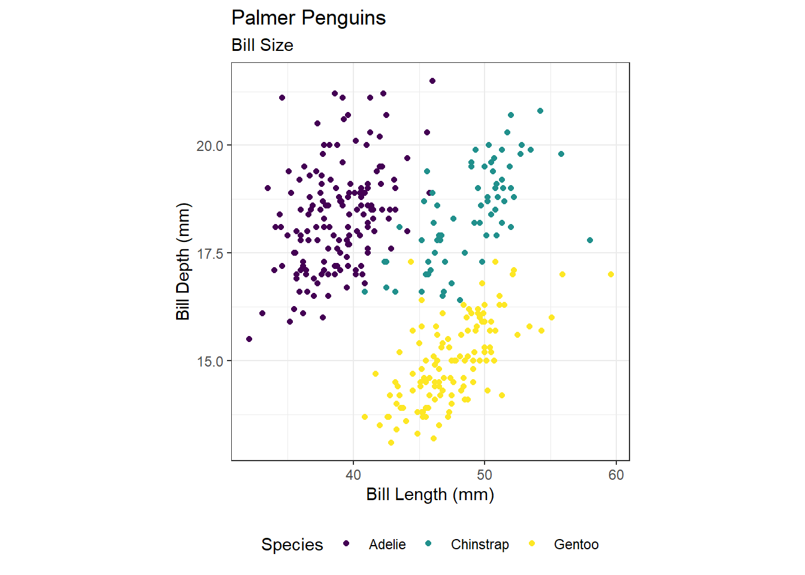

library(tidyverse)Graphics with ggplot: Your Turn Solutions
Load Libraries
Note: the ggplot package is contained within the tidyverse library.
Graphics Intro
Make your first figure
- Data set
head(diamonds)| carat | cut | color | clarity | depth | table | price | x | y | z |
|---|---|---|---|---|---|---|---|---|---|
| 0.23 | Ideal | E | SI2 | 61.5 | 55 | 326 | 3.95 | 3.98 | 2.43 |
| 0.21 | Premium | E | SI1 | 59.8 | 61 | 326 | 3.89 | 3.84 | 2.31 |
| 0.23 | Good | E | VS1 | 56.9 | 65 | 327 | 4.05 | 4.07 | 2.31 |
| 0.29 | Premium | I | VS2 | 62.4 | 58 | 334 | 4.20 | 4.23 | 2.63 |
| 0.31 | Good | J | SI2 | 63.3 | 58 | 335 | 4.34 | 4.35 | 2.75 |
| 0.24 | Very Good | J | VVS2 | 62.8 | 57 | 336 | 3.94 | 3.96 | 2.48 |
- Begin with the data
ggplot(data = diamonds)
- Specify the aesthetic mappings
ggplot(data = diamonds, aes(x = carat, y = price))
- Choose a geom
ggplot(data = diamonds, aes(x = carat, y = price)) +
geom_point()
- Add an aesthetic
ggplot(data = diamonds, aes(x = carat, y = price)) +
geom_point(aes(colour = cut))
- Add another layer
ggplot(data = diamonds, aes(x = carat, y = price)) +
geom_point(aes(colour = cut), size = 2, alpha = .5) +
geom_smooth()- Mapping aesthetics vs setting aesthetics
ggplot(data = diamonds, aes(x = carat, y = price)) +
geom_point(aes(colour = cut), size = 2, alpha = .5) +
geom_smooth(aes(fill = cut), colour = "lightgrey") - Coordinate transformations can be specified
ggplot(data = diamonds, aes(x = carat, y = price)) +
geom_point(aes(colour = cut), size = 2, alpha = .5) +
geom_smooth(aes(fill = cut), colour = "lightgrey") +
scale_y_log10()- Specify facet variables
ggplot(data = diamonds, aes(x = carat, y = price)) +
geom_point(aes(colour = cut), size = 2, alpha = .5) +
geom_smooth(aes(fill = cut), colour = "lightgrey") +
scale_y_log10() +
facet_wrap(~cut)Basics
Tidy Your Data
To tidy the preg table use pivot_longer() to create a long table.
preg <- tibble(pregnant = c("yes", "no"),
male = c(NA, 10),
female = c(20, 12))
preg# A tibble: 2 × 3
pregnant male female
<chr> <dbl> <dbl>
1 yes NA 20
2 no 10 12Solution
preg_long <- preg %>%
pivot_longer(cols = c("male", "female"),
names_to = "sex",
values_to = "count")
preg_long# A tibble: 4 × 3
pregnant sex count
<chr> <chr> <dbl>
1 yes male NA
2 yes female 20
3 no male 10
4 no female 12Layers
Change the code below to have the points on top of the boxplots.
ggplot(data = mpg, aes(x = class, y = hwy)) +
geom_jitter() +
geom_boxplot()
Solution
ggplot(data = mpg, aes(x = class, y = hwy)) +
geom_boxplot() +
geom_jitter() 
Perception
Diamonds
In the diamonds data, clarity and cut are ordinal, while price and carat are continuous.
Create a graphic that gives an overview of these four variables while respecting their types.
One possible plot, there will be many!
data(diamonds)
ggplot(diamonds, aes(x = carat, y = price)) +
geom_point(aes(color = clarity)) +
geom_smooth(aes()) +
facet_grid(~cut)Movies
The movies data set contains information from IMDB.com including ratings, genre, length in minutes, and year of release. Explore the differences in length, rating, etc. in movie genres over time. Hint: use faceting!
A few different plots, there will be many!
movies <- read.csv("https://raw.githubusercontent.com/unl-statistics/R-workshops/main/r-graphics/data/MovieSummary.csv")
summary(movies) X title year length
Min. : 7 Length:65134 Min. :1893 Min. : 1.00
1st Qu.:144108 Class :character 1st Qu.:1954 1st Qu.: 24.00
Median :195320 Mode :character Median :1983 Median : 89.00
Mean :208093 Mean :1975 Mean : 73.36
3rd Qu.:258227 3rd Qu.:1998 3rd Qu.:100.00
Max. :411511 Max. :2005 Max. :873.00
budget rating votes mpaa
Min. : 0 Min. : 1.000 Min. : 5 Length:65134
1st Qu.: 320000 1st Qu.: 5.300 1st Qu.: 12 Class :character
Median : 4000000 Median : 6.300 Median : 32 Mode :character
Mean : 15489887 Mean : 6.138 Mean : 768
3rd Qu.: 20000000 3rd Qu.: 7.100 3rd Qu.: 131
Max. :200000000 Max. :10.000 Max. :157608
NA's :58713
genre
Length:65134
Class :character
Mode :character
ggplot(movies, aes(x = year, y = budget, group = genre, color = genre)) +
geom_point()ggplot(movies, aes(x = year, y = length, group = genre, color = genre)) +
geom_smooth() ggplot(movies, aes(x = budget, y = rating, color = genre, group = genre)) +
geom_point() +
geom_smooth() +
facet_wrap(~mpaa)ggplot(movies, aes(x = log(budget + 1), y = rating, color = genre, group = genre)) +
geom_point() +
geom_smooth() ggplot(movies, aes(x = genre, fill = mpaa)) +
geom_bar() 
ggplot(movies, aes(x = rating, group = mpaa, fill = mpaa)) +
geom_density(alpha = .4) +
facet_wrap(~genre, nrow = 2)Polishing Plots
Palmer Penguins
install.packages("palmerpenguins")
data(penguins, package = "palmerpenguins")
head(penguins)| species | island | bill_length_mm | bill_depth_mm | flipper_length_mm | body_mass_g | sex | year |
|---|---|---|---|---|---|---|---|
| Adelie | Torgersen | 39.1 | 18.7 | 181 | 3750 | male | 2007 |
| Adelie | Torgersen | 39.5 | 17.4 | 186 | 3800 | female | 2007 |
| Adelie | Torgersen | 40.3 | 18.0 | 195 | 3250 | female | 2007 |
| Adelie | Torgersen | NA | NA | NA | NA | NA | 2007 |
| Adelie | Torgersen | 36.7 | 19.3 | 193 | 3450 | female | 2007 |
| Adelie | Torgersen | 39.3 | 20.6 | 190 | 3650 | male | 2007 |


Meet the Palmer penguins & Bill Dimensions by Allison Horst
- Create a scatterplot of
bill lengthversusbill widthfrom thepenguinsdata, colored byspecies
p0 <- ggplot(data = penguins, aes(x = bill_length_mm, y = bill_depth_mm, color = species)) +
geom_point()
p0
- Use the black and white theme
p1 <- p0 +
theme_bw()
p1- Clean up axis labels and include an informative title.
p2 <- p1 +
scale_x_continuous("Bill Length (mm)") +
scale_y_continuous("Bill Depth (mm)") +
ggtitle("Palmer Penguins", subtitle = "Bill Size")
p2
- Capitalize legend title and change the color palette from default.
p3 <- p2 +
scale_color_viridis_d("Species")
p3
- Move the legend to the bottom and set aspect ratio to 1.
p4 <- p3 +
theme(legend.position = "bottom",
aspect.ratio = 1)
p4
- Save your plot to a pdf file and open it in a pdf viewer.
Make sure you know where this is saving to; remember R projects and working directories!
ggsave(filename = "penguins.pdf", plot = p4)- Save a png of the same scatterplot.
ggsave(filename = "diamonds.png", plot = p4)- Embed the png into MS word or another editor.